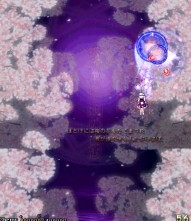
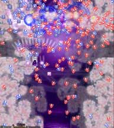
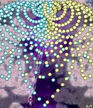
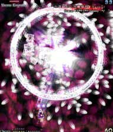
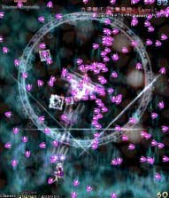

右から出てくるので右側で低速ショットで待ち伏せ。
次の左から来る雑魚も低速で、左右から出てくるのは通常ショットで撃破しよう。
途中で弾が激しくなるが中ボスが出てくるまでの間が長いので不安ならボムで消そう。

クロスして挟み込むような黄色と水色の弾を撃ち、緑と黄色の似たような弾を出し、赤と青のくさび弾を撃つ攻撃。
今回は会話中に妖夢の上にいると逆に危険になるので通常の位置（下の方）にいよう。
避けるのが難しいのでボムを使う時。


妖夢が大量に弾をバラ撒いてスローモーションする攻撃。
今回はあまりスローじゃないけど毎回同じ弾幕（固定弾）なので練習モードでパターンを作っておけばだんぜんラクチン♪